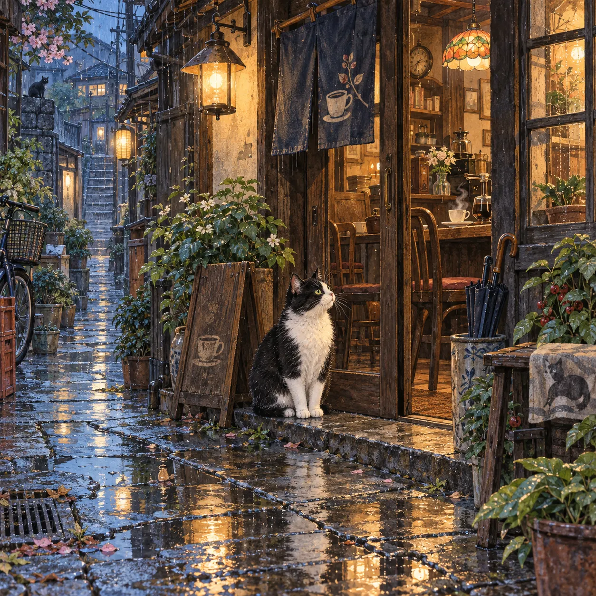
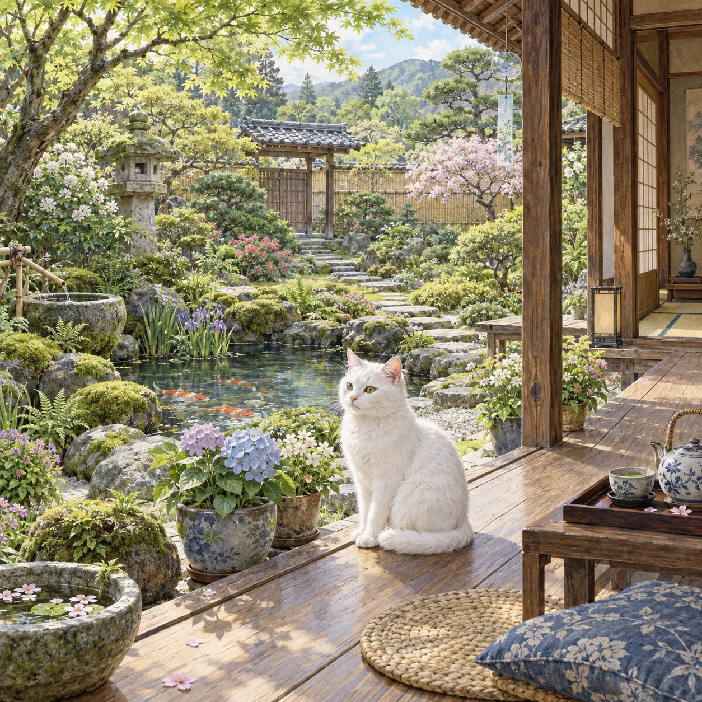
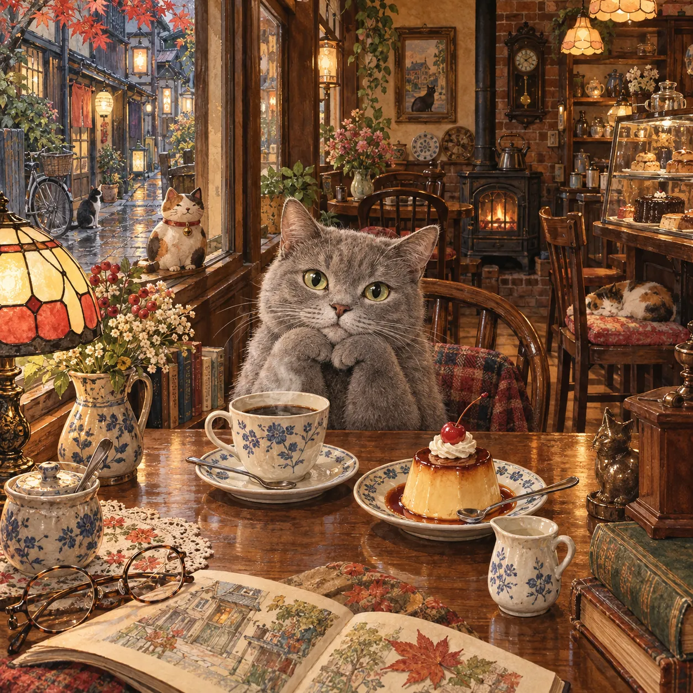

絵心ゼロ・在庫ゼロ・発送作業ゼロ
AIパズル販売 スタートガイド ＋そのままコピペで使えるプロンプト
＼ 旦那の収入超えも狙えちゃいます ／

AI×SNSで在宅収入を叶える主婦
みな @mina_ai_fukugyo
🫧 こんなお悩みありませんか？
-
😔
「AI副業」って気になるけど、
絵も描けないし、自分には無理そう… -
😔
物販に興味はあっても、
在庫を抱えたり、毎日発送に追われるのはちょっと… -
😔
パソコンも得意じゃないし、
初期費用をかけて失敗したらと思うと動けない
それ、「AIパズル販売」で解決できます！✊
絵はAIにおまかせ。印刷・梱包・発送もサービス側がやってくれます。
あなたがやるのは、「どんなパズルなら欲しいかな？」を考えることだけ。
仕組みは、たったこれだけ
👩
あなた
アイデアを
言葉にする
🤖
AI
絵を
描いてくれる
🖨️
Printify
印刷・梱包
・発送
🎁
お客様
パズルが
自宅に届く
ふつうの物販と、なにが違うの？
AIが描く
注文後に印刷
Printifyが対応
売れてから原価
このガイドで、できるようになること
- ◎言葉だけで絵を作れる：「こんな絵がほしい」を文章で伝えるだけ。描く技術は要りません。
- ◎絵をパズルという“商品”に変えられる：Printify（印刷通販サービス）に画像を載せるだけ。
- ◎在庫ゼロ・発送ゼロの仕組みが分かる：注文が入ってから、印刷・梱包・発送まで任せられます。
- ◎もう一段伸ばす3つの工夫を知れる：海外・ノウハウ販売・SNS。ここが差になります。
AIだけで、本当に絵が作れるの？
作れます🌷 ChatGPTなどの画像生成AIに、描いてほしい絵を文章で伝えるだけ。数十秒ほどで1枚のイラストが仕上がります。
💬
「森の奥の
秘密の本屋さん」
🤖
AIが描く
（数十秒）
🖼️
オリジナルの
イラスト完成
↺ イメージと違ったら「もっと〇〇に」と伝え直すだけ
たった5ステップで、パズルが商品になるまで 🎉
誰に届けるか決める → 1枚だけ絵を作る → 登録する → パズルに載せる → 値段をつけて出す。
いきなりたくさん作らないのがコツです。
💡 「誰に届けるか」からテーマを決める
いきなり絵を作り始めず、まず「このパズルを、誰が手に取るか」を思い浮かべます。相手が決まると、AIへの指示も具体的になって、商品の魅力が伝わりやすくなります。
👶 子ども向け
どうぶつ／恐竜／のりもの／お姫様／宇宙
🧑 大人向け
風景／花／猫・犬／和デザイン／ファンタジー／季節の情景
「何を作ればいいか分からない…」ときは、まずAIに売れ筋のリサーチから任せてしまいましょう。
※ ①→②→③は同じチャットで、上のボタンを順番にコピーして送ってください。
※ ①はWeb検索ができるAI（検索機能ONのChatGPT・Perplexity・Gensparkなど）がおすすめです。
あなたは、ハンドメイド雑貨やグッズ販売にくわしい市場リサーチ担当です。 AIで作ったイラストをジグソーパズルにして販売したいと考えています。 まず、Web検索を使って「今、売れているパズルの絵柄」を調べてから、 買ってもらえそうなテーマを提案してください。 【STEP A：リサーチ】 次の場所で「ジグソーパズル」を検索し、実際の商品ページを見て調べてください。 ・Etsy／Amazon／楽天市場／Pinterest／Instagram 調べてほしいこと： 1. 人気の絵柄・テーマ・色づかいの傾向 2. 価格帯と、ピース数ごとの売れ筋 3. レビューや「売れています」表示が多い商品の共通点 4. 出品がまだ少なく、今から狙えそうなすき間ジャンル 【STEP B：テーマ提案】 リサーチ結果をもとに、買ってもらえそうなテーマを10個、提案してください。 ・絵が描けない初心者でも、AIで再現しやすいこと ・完成した絵を想像するとワクワクすること ・「子ども向け」と「大人向け」を5個ずつに分けること ・それぞれに「なぜ売れそうか（リサーチのどこが根拠か）」を一言添えること 【私の好きなジャンル・色】 ［ 例：猫、パステルカラー ／ なければ空欄でOK ］
先ほどの案から「［ 選んだテーマ ］」を採用します。 このテーマを商品にするために、次の5つを整理してください。 1. 買ってくれそうな人（年齢・どんな場面で買うか） 2. 絵に入れたい要素（主役・背景・小物） 3. おすすめの色づかいと画風 4. パズルにしたとき、組み立てが楽しくなる工夫 5. 商品タイトル案を3つ
「［ 選んだテーマ ］」は、似た商品が多そうで埋もれるのが心配です。 次の3つの切り口でアレンジ案を出してください。 ・季節やイベントと組み合わせる案 ・絵の中に物語を感じられる案 ・特定の趣味の人に刺さる案（本好き・猫好き・旅行好きなど） 各案に、画像生成AIにそのまま貼り付けられる「絵の説明文」を1つずつ付けてください。 【絵の説明文の書き方】 ・「何が・どこで・何をしているか」を2〜3文で具体的に書く ・画風（水彩画・絵本風など）と、雰囲気・色づかいも文中に含める ・文字やロゴは入れない ・そのままコピペできるよう、案ごとに「 」でくくって出力する
🎨 AIに1枚だけ、絵を描いてもらう
テーマが決まったら、いよいよ絵づくり。最初は1枚だけで十分です。
パズル用は「余白なし・文字なし」がポイントなので、下の条件をそのまま入れておきましょう。
STEP1の③で出た「絵の説明文」から気に入った1つをコピーして、下のプロンプトの［ ］に貼り付けます。自分で文章を考える必要はありません。
指示を送る▶ 🤖
1枚できる▶ 👀
チェック▶ 💾
高画質で保存
↺ 気に入らなければ「チェック」から「指示」に戻って調整
ジグソーパズルにするためのイラストを1枚、作ってください。 【絵の内容】 ［ ③で出た「絵の説明文」から気に入った1つを、ここにそのまま貼り付け ］ 【パズル向けの条件】 ・絵の端から端まで描き込み、余白や枠は作らない ・文字・ロゴ・透かしは入れない ・主役を中央に置き、背景にも見どころを散りばめる ・細かいところまで、くっきり鮮明に ・高解像度で仕上げる ・既存のキャラクターや作品に似せない
🧩 実際にAIで作った、パズル向けのイラスト例

☔ 雨あがりの路地の喫茶店

🌿 初夏の庭と縁側

☕ レトロな喫茶店の午後
↑ 細かい描き込みが多い絵は、パズルにしたときの見どころが増えます。
・「動物をもう1匹足して」
・「全体の色をもっと鮮やかに」
・「背景を、もっと深い森にして」
・「夜の雰囲気に変えて」
① 手や指など、細部が崩れていないか
② 端が切れていたり、余白が空いていないか
③ 文字らしきものが紛れ込んでいないか
④ 保存は「最大サイズ・高画質」で（印刷は解像度が低いと粗くなります）
⚠️ 「〇〇（作品名）風」「〇〇のような」といった指示は避け、「ふわふわした毛並みの白い子犬」のような一般的な言葉だけで描いてもらってください。
📝 Printifyに登録する
ここからが商品化。使うのは「Printify（プリンティファイ）」という印刷通販サービスです。画像をアップロードするだけで、パズルなどのグッズに印刷して売れる仕組みです。
どちらも数分で終わります。
公式サイトへ▶ ✍️
アカウント登録▶ ➕
Add product
🧩 パズルを選んで、絵をのせる
管理画面でパズルを選ぶと、ピース数の違う商品が並びます。（取り扱いは時期により変わります。以下は一例）
110
ピース
お子さま・
はじめて
252
ピース
気軽に
楽しみたい
500
ピース
迷ったら
ここ
1000
ピース
じっくり
大人向け
↑ ピースが細かいほど、組み立てに時間がかかります
小さなお子さん向けなら少なめ、じっくり楽しむ大人向けなら多め、とSTEP1で決めた相手に合わせて選びましょう。迷ったら中間サイズからでOKです。
選んだら、保存した絵をアップロード。するとパズルの完成イメージが画面に出るので、公開前に3点だけ見ておきます。
① 大事な部分が、端で切れていないか
② 文字を入れた場合、見切れていないか
③ 画面で見た色と、大きくズレていないか
🏷️ 値段をつけて、公開する
最後は販売価格。Printifyの基本料金（製造原価）より高く、かつ似た商品と比べて無理のない金額にします。下の計算機で、利益のイメージをつかんでみてください。
💰 かんたん利益計算機
—
1個の利益
—
利益率
—
月の利益(見込)
販売価格の内訳
—
—
—
※金額はすべて例です。実際の原価・送料・手数料は、Printifyや販売先の最新表示で必ず確認してください。
タイトルと説明文も、AIにお任せできます。
ジグソーパズルの商品ページ用に、タイトルと説明文を作ってください。 【絵柄】［ 例：森の奥の秘密の本屋さん、水彩画 ］ 【ピース数】［ 例：500ピース ］ 【買ってほしい人】［ 例：30〜50代の本好きの大人。贈り物にも ］ 【出力してほしいもの】 1. 検索されやすいタイトル案を3つ（40文字以内） 2. 説明文（300文字前後） ・冒頭で絵の世界観が伝わるように ・完成後に飾る楽しみにも触れる ・実際にはない効果や、大げさな表現は書かない 3. 商品ページに入れたいキーワードを10個
📦 注文が入ったら、どうなるの？
🛒
お客様が
注文
🖨️
印刷
📦
梱包
🚚
発送
🏠
お客様に
到着
あなたの作業は 0 😊
ここまでPrintify側がやってくれます。自宅に在庫を置く必要も、発送作業もありません。
あなたがやるのは、絵づくりと商品ページ、そして「見つけてもらう工夫」だけです。
売上を伸ばす、3つの工夫
出品するだけでも販売は始められます。でも、ここから先の工夫で差がつきます。
① 海外のお客さんにも届ける
日本以外にも売り先を広げると、目に留まる機会が増えます。人気の絵柄や色は、AIに聞きながら決められます。
アメリカやイギリスなど英語圏で、ジグソーパズルの絵柄として人気のあるテーマと色づかいを教えてください。 さらに、今後3か月で需要が高まりそうな季節・イベントも挙げ、それぞれに合うイラストの説明文を、英語と日本語で1つずつ作ってください。
② 「作り方」そのものを商品にする
絵を作るのに使ったプロンプトも、立派な商品になります。表情・色・背景の変え方や、グッズ向けの絵の作り方までセットにすれば、初心者にうれしい内容に。
画像＋ 📝
プロンプト＋ 🎓
作り方のコツ＝ 📦
セット商品
③ SNSで作品を見てもらう
X・Instagram・TikTok・Pinterestなどで、できあがったパズルを紹介します。「SNS → 商品ページ → 購入」の流れができると、広告費をかけなくても見つけてもらえる可能性があります。
次のパズルを、Instagramで紹介する投稿文を3パターン作ってください。 【商品】［ 例：森の秘密の本屋さんの500ピースパズル ］ 【伝えたい魅力】［ 例：あたたかい色づかい、完成後に飾れる ］ ・1つ目は物語調、2つ目は制作の裏話調、3つ目は問いかけ調 ・各150文字前後 ・ハッシュタグを8個付ける
🔧 うまくいかないときのQ&A
印刷したら、画像が粗い・ぼやける
生成時に「高解像度」と入れ、保存も最大サイズで。それでも粗いときは、同じ構図で作り直してみてください。
既存のキャラクターに似てしまう
作品名やキャラ名を出す指示は避け、一般的な言葉だけで描写を。販売前に、似ていないかも自分の目で確認しましょう。
Printifyの対応国・配送設定が分からない
最初は自国と主要な数か国に絞って公開し、慣れてから広げましょう。
出品したのに、全然見てもらえない
SNSでの紹介を後回しにしていませんか？ 作って終わりにせず、海外展開（工夫①）やSNS発信（工夫③）とセットで動かしてみてください。
🌻 まとめ：今日やること
- ✔ 絵が描けなくても、AIでオリジナルのイラストは作れる
- ✔ 絵はPrintifyでパズルなどの商品にできる
- ✔ 印刷・梱包・発送はサービス側だから、在庫は要らない
- ✔ 先に「誰が買うか」を決めると、売れやすい絵になる
- ✔ プロンプトや作り方も、セットにすれば商品になる
まずは「どんなパズルなら、手に取ってもらえるかな？」を想像して、AIに1枚だけ絵を頼んでみましょう。その小さな一歩が、新しい収入の入り口になるかもしれません🌷
⚠️ ここで、正直にお伝えしたいことがあります。
ここまで読んで「手順が分かったから、自分でもできそう」と感じたかもしれません。
でも実は、「やり方を知っていること」と「続けて収入になること」は別物なんです。
どんな絵柄・テーマが「今」買われるの？
AIに指示しても、思ったような絵が出てこない…
出品はしたけど、どうやって見つけてもらえばいいの？
このあたりでつまずいて、そっと諦めてしまう方がいちばん多いんです。🥺
最後に、私自身の話を少しだけ
💔 私も、遠回りだらけでした
自己流で副業に手を出し、気づけば
150万円を失うところまでいきました。
「私にはセンスがないんだ」と布団のなかで一人泣いた夜は、数え切れません。
子どものささやかなおねだりに、笑って応えられない自分が情けなかった。
✨ そこから抜け出せたのは「型」を知ってから
試行錯誤の末にたどり着いたのは、
「AIを賢く使って、手堅くお家で収入をつくる実践ノウハウと神テンプレート」でした。
今のあなたと私の違いは、才能ではありません。
「成果が出る『型』を知って、
失敗を避ける道を選んだかどうか」
本当に、それだけなんです。
時間を切り売りする内職ではなく、
「AIとSNS」を賢く味方につけて
長く家庭を支える収入源を育てる。
それが、家族と自分を守るいちばん現実的な選択だと思っています。
スマホ×AIを使って
おうち時間をもっと有効に使いたい方へ📱✨
今回、私が実際に取り組んでいる
新しい方法を期間限定で公開します🫣
公開は【10/7まで】
お早めに受け取ってくださいね💌

※配布期間には限りがあります。予告なく受付を終了する場合がありますので、お早めにお受け取りください。